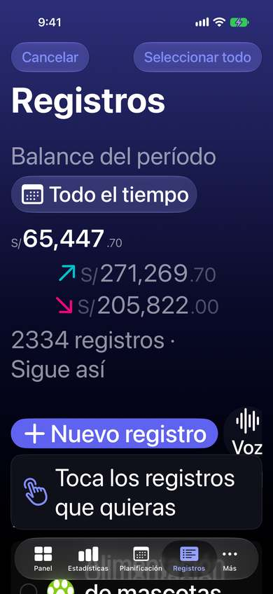
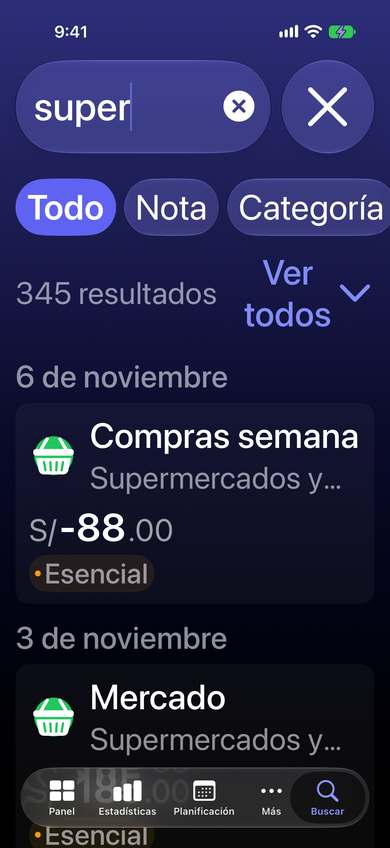
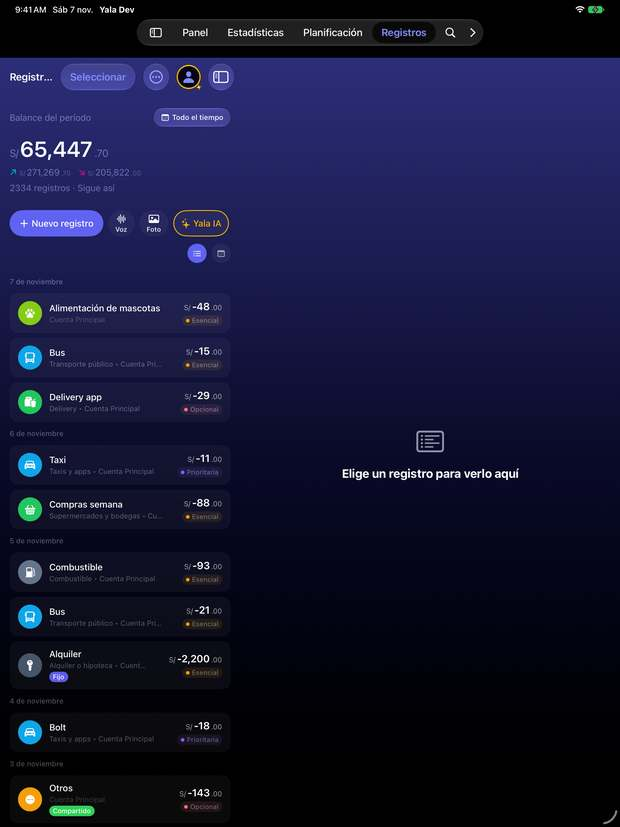
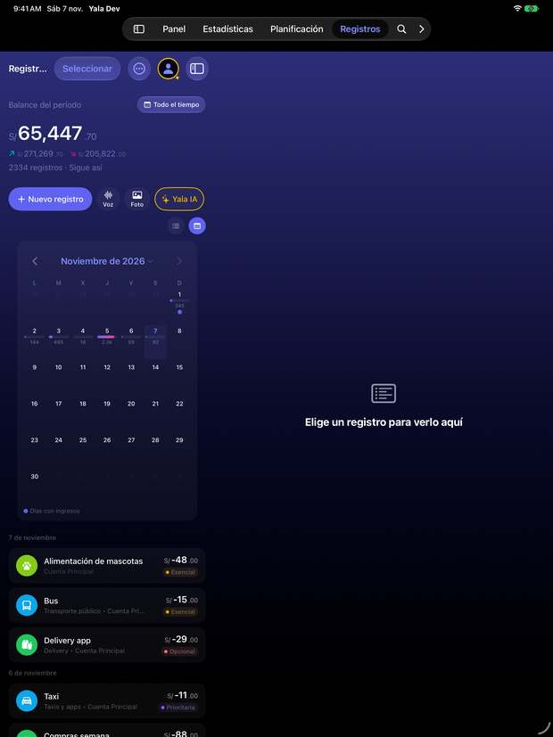
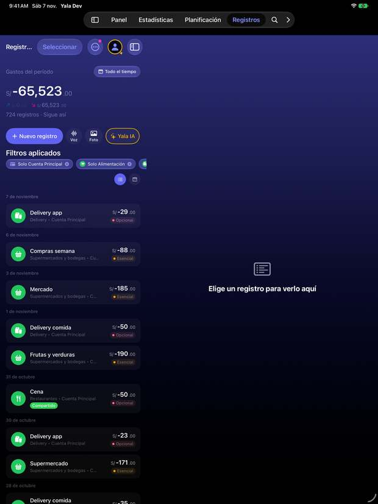
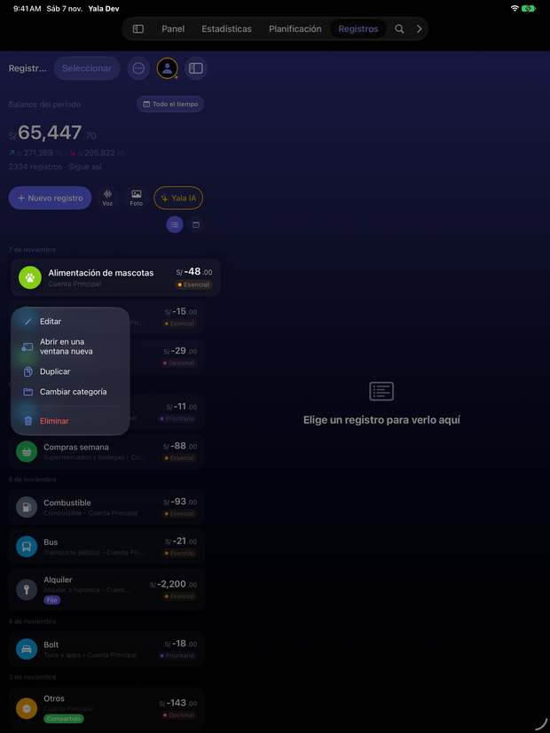
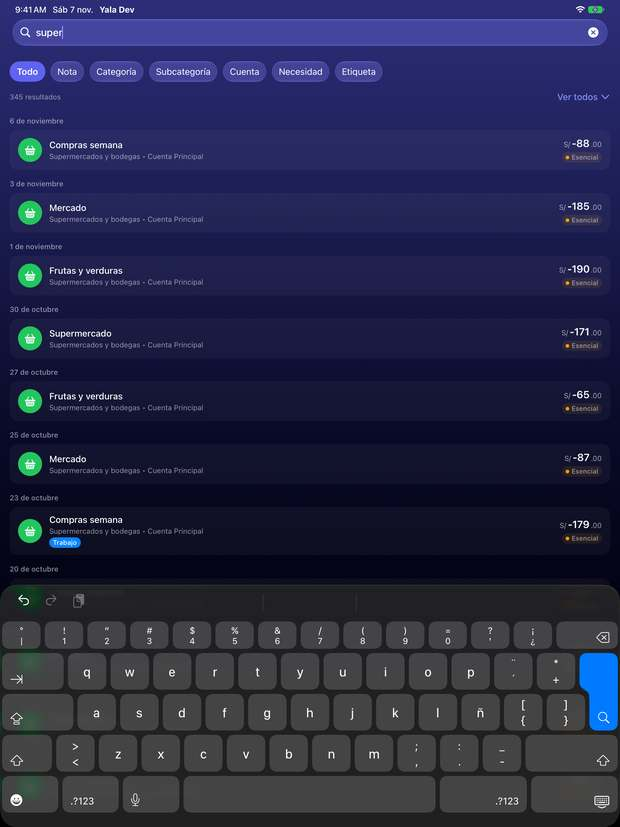

Sin resultados: «Limpiar filtros» queda fuera de la pantalla.
Captura AX3
El calendario empieza debajo del pliegue; «Noviem-bre» partido.
Captura AX3

Modo selección: la indicación tapa la primera fila.
Captura AX3

Buscar: dos resultados por pantalla.
Desliza para ver las 10 pantallas →
iPad
iPad Pro 13, vertical. Lista y detalle en dos columnas.
Captura iPad

Lista en una columna estrecha; a la derecha, «Elige un registro para verlo aquí». El título se corta: «Registr…».
Captura iPad

El calendario se aprieta en la columna de la lista mientras la de detalle sigue vacía.
Captura iPad

Filtros aplicados: el tercer chip tampoco cabe en la columna.
Captura iPad

Menú de la fila: suma «Abrir en una ventana nueva».
Captura iPad

Buscar sí está arriba (lupa) y ocupa todo el ancho.
Desliza para ver las 5 pantallas →
La tarjeta de Siri (TransactionSnippetView)
Solo aparece con «Anotar con Siri» y siempre es un borrador que va a la Bandeja. El simulador no deja escribir en la pregunta de Atajos, así que no hay captura: la maqueta sale del código, y no es una vista de Registros sino su puerta de entrada.
Del código
9:41
−S/ 45.90
Cuenta—
Categoríaalmuerzo de trabajo
Fecha17/10/26
Borrador — Revisa en tu bandeja
Reconstruida desde TransactionSnippetView.swift: importe fijo de 38 pt, «Cuenta: —» y fecha numérica.
Desliza para ver las 1 pantallas →
Las capturas originales en PNG se quedaron fuera del repositorio; aquí van en JPEG reducido para que la página pese poco.